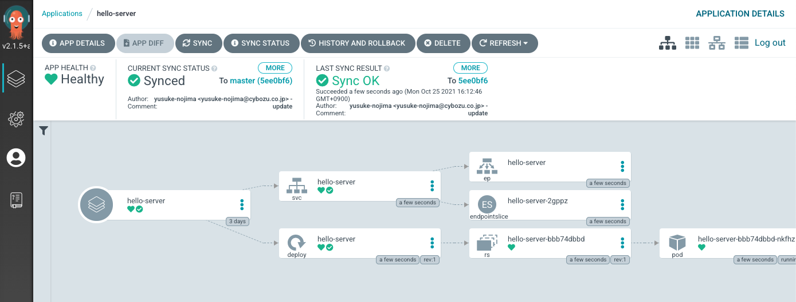

実践 Argo CD
Introduction
Argo CD は Kubernetes へのデプロイを自動化するためのツールです。
Argo CD を使えば、手動で kubectl apply を行うことなくマニフェストを必要なときに自動的に apply し、リソースの状態を常にコードと同期した状態に保つことができます。
これにより、人手によるミスを減らし、Kubernetes での運用を安全かつ効率的に行うことができます。
実践 Argo CD は Argo CD を使って Web サービスを実際にデプロイしてみるハンズオンです。Kubernetes の初歩は知っているけど、Argo CD については何も知らない人を対象にしています。
このハンズオンは、最も単純な例からスタートして、アップデートや複数環境対応といったよくある要件を実装していきます。
このハンズオンを終えれば、Argo CD の基本的な利用方法を理解できるはずです。
目次
- Step0: 環境準備
- Step1: kubectl apply でデプロイする
- Step2: Argo CD を使ってデプロイしてみる
- Step2.5: jsonnet 入門
- Step3: アップデートできるようにする
- Step4: 複数環境にデプロイする
- Step5: app-of-apps
Step0: 環境準備
まずはローカルに Argo CD を立て、自由に触れられる環境を準備しましょう。
ローカル Kubernetes クラスタの構築
最初にローカルに Kubernetes クラスタを構築してください。構築には kind を使ってください。
# kind のインストール手順は省略します。公式サイトの手順に従ってください。
# kind のクラスタを作成
kind create cluster
# `kind-control-plane` が存在していることを確認する
kubectl get node
※ 他の構築ツールでもほとんどの作業は実施可能なので、minikube などでもこのハンズオンを進めることができます。ただし、イメージのロードの部分だけは手順を置き換える必要があります。
ローカル Argo CD の構築
Getting Started の1番から4番までの手順を行ってください。3番の手順でどれを選んだらいいかわからない人はとりあえず port forward にしておくのが安牌だと思います。
4番まで終わったらブラウザから argocd-server にアクセスしてみてください。UI が見れてログインできれば成功です。
jsonnet のインストール
jsonnet の公式のバイナリをPATHの通った任意のディレクトリに突っ込んでください。
※ Kubernetes 環境に適用されるマニフェストは Argo CD がバンドルしている Go 版 jsonnet によって生成されるので、厳密な動作確認には Argo CD が使うのと同じ jsonnet を使うのが望ましいです。ハンズオンではそこまでの厳密さは必要ないと思うので、最新の C++ 版のバイナリを使うことにしています。
動作確認用に bastion をデプロイしておく
構築したサービスの動作を確認するために bastion (kubectl exec で入ってオペレーションするための踏み台) を用意しておきます。これはハンズオンのために便宜的に用意しているだけのもので、実運用では不要です。
以下のマニフェストを kubectl apply してください。
apiVersion: v1
kind: Pod
metadata:
name: bastion
spec:
containers:
- name: bastion
image: cimg/base:stable
command: ["sleep", "infinity"]
Step1: kubectl apply でデプロイする
まずは Argo CD を使わずに普通にサービスをデプロイしてみます。
Git リポジトリを作る
GitHub に新しく Git リポジトリを作成してください。名前は何でもいいですが、ここでは hello-server という名前にしたという前提で進めていきます。
後々 Argo CD から read する必要があるので、リポジトリのスコープは public にしておいてください。
ソースコードをコピー
hello-server に最初のコードを投入しましょう。
以下のディレクトリに簡単な HTTP サーバーのソースコードと Kubernetes マニフェストが入っています。
https://github.com/cybozu/argocd-handson/tree/main/src/step1/
これを今作ったリポジトリにコピーします。
カレントディレクトリが hello-server のトップにある状態で以下の手順を実行してください。
# 一時ディレクトリ作成してそこに移動
pushd $(mktemp -d)
# ソースコードを取得
git clone https://github.com/cybozu/argocd-handson .
# step1 の内容を元のディレクトリにコピー
cp -r src/step1/* $(dirs -l +1)
# 元のディレクトリに戻る
popd
コピーしたファイルやディレクトリをすべてコミットして git push しておいてください。
イメージをビルド
make push するとイメージをビルドしてローカルの kind クラスタにイメージをロードできます。やってみてください。
※ mac を使っている人は go build に環境変数として GOOS=linux GOARCH=amd64 を渡す必要があります。
※ kind 以外のクラスタ構築ツールを使っている人は Makefile の push の手順を書き換える必要があります。例えば、minikube を使っている人は kind load docker-image の代わりに minikube image load を使うように書き換えてください。
実際の運用では make push でコンテナレジストリへの push を行う想定ですが、今回のハンズオンではコンテナレジストリを用意する手間を省くために、コンテナレジストリへの push は行っていません。
その代わりに kind の機能を使ってノードに直接イメージをロードしています。
イメージの動作確認
念のため、今ビルドしたイメージが動くのか確かめてみましょう。 まずはサーバーを起動します。
docker run --rm -p 3000:8080 docker.example.com/hello-server:latest
そして別のシェルから以下を実行してください。
curl -i localhost:3000
正常にレスポンスが返ってくれば成功です。
※ ローカル側のポートを 3000 にしているのは、Argo CD 用のポートフォワードと被らないようにするためです。
Kubernetes にデプロイ
Kubernetes クラスタにデプロイしてみましょう。
まずは Argo CD を使わず、普段通り kubectl apply でデプロイします。
kubectl create namespace hello-server
kubectl apply -n hello-server -f kubernetes/deployment.yaml
kubectl apply -n hello-server -f kubernetes/service.yaml
# 確認
kubectl get all -n hello-server
# アクセスしてみる
kubectl exec -it bastion -- curl -i http://hello-server.hello-server.svc.cluster.local
アクセスが正常に行われれば成功です。
後片付け
以上で Argo CD の使い方を学ぶ準備ができました。 次のステップで Argo CD を使ってデプロイしなおすので、一旦 Kubernetes 環境は綺麗にしておきます。
kubectl delete namespace hello-server
Step2: Argo CD を使ってデプロイしてみる
それでは Argo CD を使ってデプロイしてみましょう。
Argo CD用の Git リポジトリを作る
Step1 で作ったリポジトリとは別に、Argo CD のマニフェストを置くためのリポジトリを GitHub に作ってください。リポジトリ名は何でもいいですが、ここでは hello-apps を指定したものとして進めます。リポジトリのスコープは public にしておいてください。
マニフェストをコピーする
以下のマニフェストを hello-server.yaml という名前で hello-apps リポジトリの直下に作ってください。
apiVersion: argoproj.io/v1alpha1
kind: Application
metadata:
name: hello-server
# Application リソースは決められた namespace に作成しないといけない。
namespace: argocd
# Application を消した時にその Application が作成したリソースを削除する。
finalizers:
- resources-finalizer.argocd.argoproj.io
spec:
project: default
source:
# repoURL は自分のリポジトリのURLに合わせて書き換えてください
repoURL: https://github.com/YOUR_NAME/hello-server
# "Revision" という名前だがブランチも指定できる。
targetRevision: main
# Kubernetes マニフェストを含むディレクトリを指定する。
path: kubernetes
destination:
server: https://kubernetes.default.svc
# sync 先の namespace。 metadata のほうの namespace と混同しないように。
namespace: hello-server
syncPolicy:
automated:
# prune が true の場合、Git に定義されていないリソースを自動的に削除する。
prune: true
# selfHeal が true の場合、Git にコミットがないときでも定期的に sync を行う。
selfHeal: true
この “Application” というリソースが Argo CD の中核となるリソースです。これは「どのソースコードを」「どの環境に」「どういうパラメータで」適用するか、という情報を含んだリソースです。”Application” という単語が汎用的すぎてちょっとわかりにくいですが、kubectl apply の apply を名詞化したものだと思っておくのがよいと思います。このリソースを使うことで kubectl apply を自動化することができます。
マニフェストをコピーしたら自分の環境に合わせて repoURL, targetRevision, path を書き換えてください。
repoURLには、自分の hello-server のリポジトリの URL を指定します。targetRevisionには、自分の hello-server のデフォルトブランチ (main または master) を指定します。pathにはマニフェストを格納したディレクトリへのパスを指定します。このハンズオンの手順の通りにすすめていればkubernetesを指定することになるでしょう。
Argo CD を使ってデプロイする
kubectl create namespace hello-server
argocd app create -f hello-server.yaml
Argo CD の UI を見に行くと作成されたアプリケーションの様子が確認できます。

ついでにアクセスできるかも確認しておきましょう。
kubectl exec -it bastion -- curl -i http://hello-server.hello-server.svc.cluster.local
リクエストが成功したら step2 は完了です。お疲れ様でした！
Step2.5: jsonnet 入門
次のステップで jsonnet を利用するので、先に jsonnet について学んでおきましょう。
Tutorial
公式サイトの Tutorial が優秀なのでこれを見るのが手っ取り早いです。
忙しい人は以下を読んでおけば後は雰囲気でなんとかなると思います。
Step3: アップデートできるようにする
現在のマニフェストは image に latest タグを指定しています。しかし、実際の運用では latest タグを使うことは非推奨です。第一に、latest タグの内容はその時々によって変化するので、デプロイに再現性がありません。第二に、ソースコードを更新したときにマニフェストに差分が発生しないので、差分発生をトリガーとしてデプロイを行う Kubernetes の考え方と相性が悪いです。
そこで、latest タグではなく、特定のバージョンを一意に指定できる文字列、例えばコミットハッシュを指定することにします。
しかし、ナイーブにこれを実現しようとすると、ソースコードに変更が入るたびにマニフェストの image を手動で変更することになります。実際にこういう運用をしているチームもあるのですが、煩雑ですしミスをするリスクもあるので自動化すべきでしょう。
よって、以下のような仕様にします。
- ソースコードが変更されるたびに、CI で docker イメージをビルドし、コミットハッシュをタグとして push する。
- Argo CD によって main ブランチを監視し、main ブランチが変更されるたびに main ブランチの最新のコミットハッシュを使ってサービスをデプロイする。
ただし、今回のハンズオンでは CI をセットアップする時間がないので人力 CI で代替します。
jsonnet を導入する
今までマニフェストは単なる YAML ファイルでしたが、image タグを動的に差し込む必要があるので、何かしらの仕組みを導入しなければなりません。選択肢として
- kustomize
- jsonnet
- helm
などがありますが、このハンズオンでは jsonnet を採用します。
まず、既存のマニフェストを jsonnet 化していきましょう。
YAML から JSON に変換するスクリプトを書いておくと便利なので、以下のスクリプトを PATH の通ったディレクトリに yaml2json という名前で保存しましょう。 chmod +x もしておいてください。
#!/usr/bin/env python3
import yaml, json, sys
docs = yaml.safe_load_all(sys.stdin)
jsons = [json.dumps(doc, indent=2) for doc in docs]
print("\n---\n".join(jsons))
(このスクリプトを動かすには PyYAML が必要です。入ってない人は sudo apt install python3-yaml または python3 -m pip install pyyaml でインストールしてください)
それでは、step2 で作成した YAML マニフェストを jsonnet 化していきましょう。
hello-server の kubernetes ディレクトリに移動して以下の手順を行ってください。
cat deployment.yaml | yaml2json | jsonnetfmt - > deployment.libsonnet
cat service.yaml | yaml2json | jsonnetfmt - > service.libsonnet
そして、main.jsonnet を以下の内容で作成します。
[
import 'deployment.libsonnet',
import 'service.libsonnet',
]
これで jsonnet 化は完了です。動作確認してみましょう。
jsonnet main.jsonnet
これで2つのマニフェストを配列としてまとめたものが出力されれば成功です。
ここで jsonnet スクリプトの拡張子について説明しておきます。慣習的に以下のように拡張子を使い分けることが多いです。
.jsonnet: エントリポイントとなる jsonnet スクリプト.libsonnet: 他の jsonnet スクリプトから import される jsonnet スクリプト
jsonnet 化ができたら *.yaml の方のマニフェストは不要なので git rm しておいてください（残していると Argo CD によって両方デプロイされてしまいます）。
タグを差し込めるようにする
では、タグを外部から差し込めるようにしましょう。
まず、Deployment をタグを引数を取る関数として定義します。deployment.libsonnet を以下のように書き換えてください。
-
ファイルの先頭に
function(tag)という行を挿入します。jsonnet ではfunction(引数) 式という構文で無名関数を記述できます。もともとdeployment.libsonnetはひとつの式だったので、これによりtagを受け取ってオブジェクトを返す関数になりました。 -
image:で始まる行を以下のように書き換えます。image: 'docker.example.com/hello-server:' + tag,これで image のタグを外部から指定できるようになりました。
-
フォーマットを整えます。
jsonnetfmt -i deployment.libsonnet
この修正によって deployment.libsonnet が関数化されたので、main.jsonnet の方も修正しなければなりません。以下のように、deployment.libsonnet に引数を渡すように書き換えます。
function(tag)
[
(import 'deployment.libsonnet')(tag),
import 'service.libsonnet',
]
この書き換えにより、main.jsonnet のトップレベルの式が関数を返すようになりました。この関数の引数は TLAs (Top-Level Arguments) と呼ばれます。TLAs の値は jsonnet コマンドのコマンドライン引数として与えることができます。
jsonnet --tla-str tag=abcdefg main.jsonnet
hello-server を変更したので、git commit と git push を行い、そして make push しておいてください。
make push は本来は CI で行うべきですが、今回のハンズオンでは人力で CI を代替します。
Argo CD から TLAs 経由で引数を渡す
最後に、Argo CD から TLAs 経由でタグを差し込むようにしましょう。hello-apps の hello-server.yaml を以下のように書き換えてください。
...
source:
...
path: ...
# ！！以下を追加！！
# jsonnet の TLAs に渡す引数を指定する。
directory:
jsonnet:
tlas:
- name: "tag"
value: "$ARGOCD_APP_REVISION"
# ！！追加ここまで！！
...
$ARGOCD_APP_REVISION は Build Envrionemnt と呼ばれる環境変数的なもので、Argo CD が実行時にデプロイ対象のコミットハッシュに置き換えてくれます。このように指定することで、tag には hello-server の main ブランチの最新のコミットハッシュが 渡されます。
それでは、Application を更新しましょう。
argocd app create --upsert -f hello-server.yaml
このコマンドを打ったら Argo CD の UI を確認しましょう。うまく行っていれば、latest タグではなくコミットハッシュで指定されたイメージがデプロイされるはずです。
サービスをアップデートしてみる
hello-server の main.go の version を 2.0.0 に書き換えてデプロイしてみましょう。
ソースコードを書き換える → コミット → git push します。
本来はこれだけで変更がデプロイされるはずですが、前述の通りハンズオンでは CI がないので以下の手順を行います。
# イメージをビルドして push する
make push
# Argo CD の sync を手動でキックする
# 何もしなくても待っていれば自動的に sync されるが、待つのが面倒なので
argocd app sync hello-server
sync が終われば、hello-server にリクエストを送ると Hello (2.0.0) が返ってくるはずです。
Step4: 複数環境にデプロイする
実際の運用ではひとつのサービスを複数環境にデプロイする必要があります。典型的には、dev 環境、staging 環境、prod 環境の３つの環境にデプロイすることになるでしょう。このハンズオンでは、dev、staging、prod の３環境にデプロイする例を扱います。
GitOps では環境と Git ブランチを対応させます。このハンズオンでは以下のようにブランチを切ることにします。
| 環境 | ブランチ | 用途 |
|---|---|---|
| dev | develop | 開発、試験など |
| staging | main | 適用前試験など |
| prod | release | 運用 |
また、例をより現実に近づけるために、環境ごとに異なる設定をしなければならないという要件を追加します。具体的には、hello-server に渡す MESSAGE 環境変数を環境に合わせて以下のように設定することにします。
| 環境 | MESSAGE |
|---|---|
| dev | Hello (dev) |
| staging | Hello (staging) |
| prod | Hello (prod) |
Namespace を用意
このハンズオンでは、環境ごとに Namespace を用意することで仮想的に環境を切り分けることにします。
kubectl create namespace dev-hello-server
kubectl create namespace staging-hello-server
kubectl create namespace prod-hello-server
MESSAGE を差し込めるようにする
MESSAGE を環境ごとに変えたいので、MESSAGE を TLA によって指定できるようにしましょう。Step3 のやり方を参考にやってみてください。
hello-server の kubernetes ディレクトリで以下を実行して MESSAGE 環境変数が Hello (dev) になっていたら成功です。
jsonnet --tla-str tag=abcdefg --tla-str message='Hello (dev)' main.jsonnet
ブランチの作成
各環境に対応するブランチを hello-server リポジトリに用意しましょう。main (staging に対応) はすでにあるので、develop (dev に対応) ブランチと release (prod に対応) ブランチを作成してください。参照先は main と同じコミットで大丈夫です。
ブランチを作成したら、各ブランチを GitHub に push し、さらに各ブランチで make push を行ってください。
Application リソースの jsonnet 化
デプロイ先の環境が３つになったので、Application リソースも３つ作る必要があります。当然ですが、共通部分はくくりだしたいので、パラメタライズできるように Application リソースを jsonnet 化します。
Step3 の手順を参考に、hello-apps の hello-server.yaml を jsonnet 化して、hello-server.libsonnet を作ってください。
そして、hello-server.libsonnet の内容を関数でくるみ、env と branch を引数で渡せるようにしましょう。
そして、与えられた env と branch に応じて、以下のフィールドが正しく設定されるようにコードを修正していきましょう。
metadata.name- 値に
env + '-hello-server'を渡すようにする。
- 値に
spec.source.targetRevision- 値に
branchを渡すようにする。
- 値に
spec.source.directory.jsonnet.tlas- 配列に
{name: 'message', value: 'Hello (%s)' % env}を追加する。
- 配列に
spec.destination.namespace- 値に
env + '-hello-server'を渡すようにする。
- 値に
最後に、環境ごとに main.jsonnet を作ります。hello-server.libsonnet と同じディレクトリに dev, staging, prod というディレクトリを作成し、それらの下に main.jsonnet を作成してください。例えば、prod/main.jsonnet は以下のような内容になります。
(import '../hello-server.libsonnet')('prod', 'release')
Note: 最終的なコードは以下のような構成になります。ここまでの説明でよくわからないところがあれば、以下のコードを参考にしてください。
https://github.com/cybozu/argocd-handson/tree/main/src/step4/
main.jsonnet を作成できたら適用してみましょう。
jsonnet dev/main.jsonnet | argocd app create --upsert -f -
jsonnet staging/main.jsonnet | argocd app create --upsert -f -
jsonnet prod/main.jsonnet | argocd app create --upsert -f -
動作確認
まず bastion に入って curl でリクエストを送ってみましょう。
kubectl exec -it bastion -- bash
(bastion)$ curl -i hello-server.dev-hello-server.svc.cluster.local
...
Hello (dev) (v2.0.0)
(bastion)$ curl -i hello-server.staging-hello-server.svc.cluster.local
...
Hello (staging) (v2.0.0)
(bastion)$ curl -i hello-server.prod-hello-server.svc.cluster.local
...
Hello (prod) (v2.0.0)
環境によってメッセージが変化していることが確認できました。
次にアップデートを試してみましょう。
hello-server の develop ブランチに移動し、main.go の version を v3.0.0 などに書き換えて commit & push してください。
そして make push し、argocd app sync dev-hello-server してください。(繰り返しますが、この手順は本来は CI で自動化されているものです。今回はハンズオンのため、手動でやっています)
すると dev 環境に v3.0.0 がデプロイされるはずです。bastion から確認してみてください。
dev で動作確認できたら staging にデプロイしましょう。develop ブランチから main ブランチにプルリクエストを作り、マージしましょう。そして make push && argocd app sync staging-hello-server しましょう。これで staging にデプロイができます。
prod へのリリースも同様の手順です。やってみましょう。
Step5: app-of-apps
Step4 までは Application リソースは手動で適用していました。しかし、サービスの種類が増えたり環境の数が増えたりすると適用すべき Application リソースの数も掛け算で増えていきます。これでは頻繁に手動手順を行う必要があり、あまり望ましい状態とは言えません。
実は Application リソースも単なる Kubernetes のリソースであり、Argo CD によってデプロイすることができます。つまり、Application を作成する Application を作ることができます。この考え方を app-of-apps と言います。
app-of-apps の考え方を採用すると、Kubernetes クラスタごとにひとつだけ手動で Application を適用すればよくなります。他の Application は、この Application によって自動的にデプロイされます。
他の Application リソースをデプロイする Application リソースは慣習的に *-apps と名付けられます。
大規模な Kubernetes クラスタの場合、app-of-apps の階層を多段にすることがあります。例えば サイボウズの Kubernetes 環境では以下のように Application が３層構造になっています(※)。それぞれの Application は一個下の階層の Application をデプロイし、最下層の Application は Deployment や Service といった具体的なリソースをデプロイします。
| Application | 何個あるのか | 管理者 |
|---|---|---|
root-app | Kubernetes クラスタごとにひとつ | Kubernetes クラスタの管理者 |
*-apps | (Kubernetes cluster, チーム) ごとにひとつ | そのチームに属する人 |
| サービスごとの Application | (Kubernetes cluster, 環境, サービス) ごとにひとつ | 同上 |
※ 実際にはもっと複雑ですが、このハンズオンではかなり単純化して説明しています。
app-of-apps を導入する
それでは hello-server も app-of-apps に移行してみましょう。このハンズオンでは単純化のために app-of-apps の階層は２層にします。つまり、root-app が直接 {dev,staging,prod}-hello-server という Application 群をデプロイする構成にします。
まず、Step4 で作ったリソースを削除して環境をキレイにしておきます。
argocd app delete dev-hello-server
argocd app delete staging-hello-server
argocd app delete prod-hello-server
次に、hello-apps リポジトリ側の準備をします。まず、ディレクトリレイアウトを少し変えましょう。hello-apps リポジトリのトップに hello-server ディレクトリを作成し、既存のファイルをすべてその下に移動させます。
mkdir hello-server
git mv dev prod staging hello-server.libsonnet hello-server
次にルートとなる Application を作ります。このハンズオンでは一つの Kubernetes クラスタの中にすべての環境を収めているため、ルートとなる Application はひとつで十分です。
hello-apps リポジトリのトップに root-app というディレクトリを作成し、その下に root-app.yaml という名前で Application のマニフェストを配置します。
mkdir root-app
editor root-app/root-app.yaml
apiVersion: argoproj.io/v1alpha1
kind: Application
metadata:
name: root-app
namespace: argocd
finalizers:
- resources-finalizer.argocd.argoproj.io
spec:
project: default
source:
# 自分のリポジトリのURLに合わせて書き換えてください
# hello-server ではなく hello-apps を参照することに注意
repoURL: https://github.com/YOUR_NAME/hello-apps
targetRevision: main
# デプロイする Application リソースがあるディレクトリを指定
path: hello-server
directory:
# サブディレクトリにある *.jsonnet もデプロイ対象に含める
recurse: true
destination:
server: https://kubernetes.default.svc
# ここで指定した namespace よりも各マニフェストに書かれている .metadata.namespace のほうが優先される。
namespace: argocd
syncPolicy:
automated:
prune: true
selfHeal: true
それでは、root-app をデプロイしてみましょう。
# Application が存在しないことを確認しておく
argocd app list
# root-app を作成
argocd app create -f root-app/root-app.yaml
# root-app が {dev,staging,prod}-hello-server を作成してくれるので
# ある程度待つと Application が4つ表示されるようになる
argocd app list
# Pod や Deployment などもそれぞれの namespace に作成されている
kubectl get all -n prod-hello-server
これで app-of-apps の導入ができました。{dev,staging,prod}-hello-server が Argo CD によって管理されるようになったため、Git 上でマニフェストが更新されれば自動的に対応する環境にデプロイされます。手動でのオペレーションは必要ありません (このハンズオンの環境では argocd app sync を手で打つ必要がありますが)。
唯一 root-app だけは更新時に手動で argocd app create --upsert する必要があります。しかし root-app はめったに変更しないでしょうから、コストとしては許容範囲内だと思います。